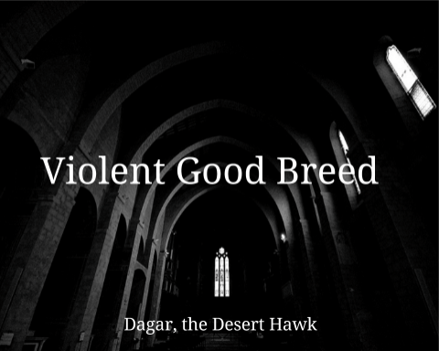

Challenge: Design a Band
Challenge Information
Write in your own information about the challenge. Ideas to include:
- ---What is design thinking? Why are we studying it?
- ---What are the steps of the DEEP design thinking process?
- ---Summarize the steps that we did in class to make the album cover.
Album Cover
Band Biography
Darger, the Desert Hawk comes from the city of San Jose, California. The group memembers Jamaal, Tyrone, Steve and Juaquin bring diversity to the band. As children they would play instruments for fun. As they became older, their interest in music grew. They met in the school band. They became friends and decided to create a band together outside of school. They would work night jobs to earn money to buy their own instruments and equipment. Their senior year of high school, they would get their first gig at birthday party.
The group grew it's popularity through social media. A music producer had reach to the group to make them an offer to sign them. The producer liked what he heard and decided to sign the group for a 5 year, $500,000 contract. On the first album the group went platnium. The music brought people together due it's cultural diversity. They were know worldwide and were asked to do many tours around the world. Their music was timeless.